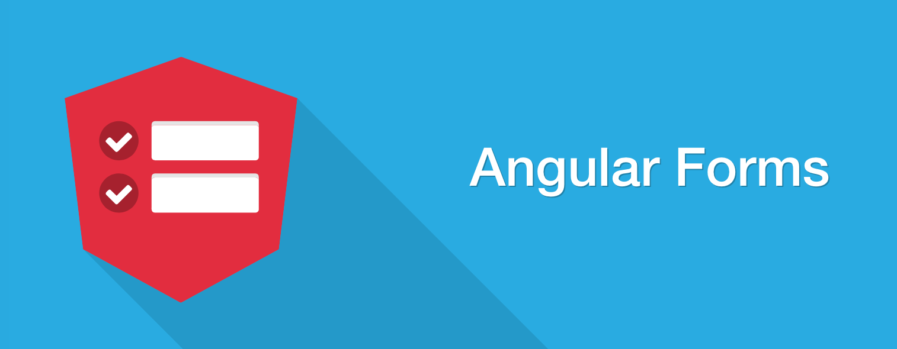

<div id="page" class="hfeed site">
  <div id="main" class="site-main">
    <div class="blog-single ">
      <div class="layout-fixed">
        <article class="post type-post hentry">
          <header class="entry-header">
            <h1 class="entry-title">Template Driven Form</h1>
            <div class="featured-image">
              
            </div>
            <div class="entry-content">
              <h4>Cominciamo!</h4>
              <h4>Crea una nuova App</h4>
              <p>Cominciamo una semplice app con Angular digitando il comando ng new template-driven-form.</p>

              <h4>Prepariamo l’app.component.html </h4>
              <p>Vai all’app.component.html e mettici questo codice:</p>
              <ngx-gist
                style="height: 1100px"
                [gistId]="'lady-ody93/2f3c1472d93e57f6a1c526796d22f22a'"
              ></ngx-gist>

              <p>Nel codice sovrastante abbiamo inserito solo i campi di nome, email e messaggio. Ora vi spiego il processo di validazione dei campi del form.</p>

              <p>Per visualizzare un messaggio di errore abbiamo bisogno di un elemento div  che va incluso nel elemento di input come riportato qui sotto:</p>
              <ngx-gist
              [gistId]="'leidyrosario/8636e8616d745a6dcfc727c5b227c799'"></ngx-gist>

              <p>Nel codice di sopra l’*ngIf convalida l’errore se il campo del form non è valido. Abbiamo aggiunto fullName, email, message e nel messaggio di errore abbiamo contrassegnato con fullName.valid, email.valid o message.valid. </p>
              
